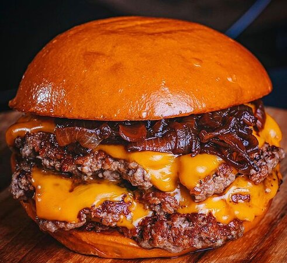

Smashed Burger

Savor the seductive allure of a smashed burger, with each juicy patty boasting a caramelized
crust that
delivers an irresistible burst of flavor in every bite.
Ingredients
- Ground beef (80% lean, 20% fat
- Salt and pepper to taste
- Burger buns
Instructions
- Preheat a griddle or non-stick skillet over medium-high heat.
- While the griddle is heating, divide the ground beef into small, equal-sized portions (usually 2 to 4 ounces
each).
- Season each portion with salt and pepper, shaping them loosely into balls.
- Place a ball of ground beef onto the hot griddle and immediately press it down with a spatula to create a
thin patty.
- Cook for about 2-3 minutes until the bottom develops a nice crust. Flip the patty and cook for an additional
2-3 minutes or until the desired level of doneness is reached.
- Optional: Add cheese on top of each patty during the last minute of cooking for a classic cheeseburger.
- Toast the burger buns on the griddle for a minute or until they are lightly golden.
- Assemble your smashed burgers with your favorite toppings and condiments.